「旅行出游」
-

美敦力胰岛素泵·售后服务
“住酒店时，了解下周围有药没有药店、医院。有没有胰岛素和直通消毒棉签。在酒店房间里留一个急救卡。急救卡上可以注明病情、紧急联系人等重要信息。如果遇到昏迷低血糖时，放在床头以防万一。外出旅行勤测血糖。坐长途飞机，胰岛素随身携带。一般携带5支胰岛素。旅行中不要擅自停药。而且毕竟旅行时生活习惯会有变化，勤测血糖很重要。”
-

省级医院·糖尿病科医生
“旅游方面需要注意的：a、病情稳定，血糖平稳。b、药物准备，以及了解途中的医疗资源。C、最好要结伴出行，放松心态，避免过度劳累。d、按时监测。e、注意足的保护。F、随身携带急救卡，面写明您患有糖尿病，您的姓名及家人联系电话。如果是出国旅游，最好用所在国家的语言写下您的联络方式，并告知一起旅游的人您患有糖尿病，以备必要时得到帮助。”
-

糖尿病患者·带病10年
“在假期中，要注意自身身体调节。首先必备血糖仪，足够的药物，身边一定要带着糖来预备低血糖的发生。最好穿着软皮、帆布或布面鞋，袜子最好穿棉线的，颜色不要太深，以免脚有破损时难以察觉。”
小贴士
· 出发前准备 ·
-
饮食计划
预定机票时，询问航空公司有没有专门为糖尿病人准备的食物。如果没有的话，可以自行准备些小零食，水果，及糖块。提前注意当地饮食特点及风俗。控制饮酒以及饭量
-
急救包
提前准备一个能随身携带的急救包。要有止血带，胰岛素，试纸，酒精棉片等。乘坐长途交通工具时，务必带足够量的胰岛素
-
告知同行
需要把病情告诉您的通行。至少有一个人要知道您的病情。并且告诉他应急措施
-

沙滩/海边
注意取下胰岛素泵。注意海边环境的潜在危险，例如植物，垃圾，玻璃渣等。避免出现痉挛，务必频繁检查脚底以及穿舒适的拖鞋
-
国外
提前做好攻略。根据当地的医疗设施准备好急救包。同时也应该学一些基本的当地语言应对紧急情况。出发前应咨询医生
-

野外
提前了解当地地形特征。做好充分的准备。同时注意冷冻胰岛素。注意带足量的酒精试纸擦拭手指，避免细菌侵入身体

小结
糖尿病患者患心脏病的风险几乎增加一倍，而且患有抑郁症等精神障碍的风险更高。 但大多数2型糖尿病病例是可以预防的，有些甚至可以逆转。 采取措施预防或控制糖尿病并不意味着生活在饥饿中; 这意味着要吃美味均衡的饮食，这也会提高你的能量和改善你的情绪。 你不必完全放弃甜食，也不必放弃自己的饮食习惯。 有了这些提示，您仍然可以从您的膳食中获得乐趣，而不会感到饥饿或饮食的快乐被剥夺。
返回顶部